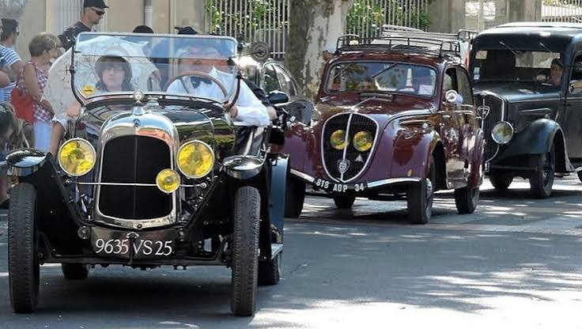

Fête Ouvrière
de GangesGanges 1900 : quand la capitale du bas de soie remonte le temps


⟹ Fêtes & traditions ⟸
Ganges fut, au tournant du XXe siècle, la capitale française du bas de soie de luxe. Filature, moulinage et bonneterie y employaient plusieurs centaines d'ouvriers et d'ouvrières : au plus fort de cet âge d'or industriel, la filature gangeoise faisait travailler environ un millier de personnes, très majoritairement des femmes, et la bonneterie plusieurs centaines d'autres. Cette prospérité textile a façonné durablement le visage et la mémoire de la ville.

C'est pour raviver cette mémoire ouvrière que naît, au milieu des années 2000, la reconstitution historique « Ganges 1900 », portée par l'office de tourisme de la ville et l'association du même nom. Le temps d'un week-end, chaque année début septembre, le centre historique se vide de sa modernité pour renouer avec l'époque glorieuse du bassin de Ganges, entre 1900 et 1930.
Décors d'époque, costumes, absence de véhicules modernes : c'est autour de ces trois piliers que se construit chaque édition, avec son lot de nouveautés — spectacles de rue, automates, expositions — venant enrichir année après année cette grande fête populaire et gratuite.
La manifestation s'inscrit aujourd'hui dans un territoire reconnu à l'échelle mondiale : Ganges, « Porte Sud des Cévennes », fait partie du périmètre inscrit au Patrimoine mondial de l'Unesco au titre des paysages culturels de l'agropastoralisme méditerranéen.
Née d'une volonté de transmettre la mémoire ouvrière du bas de soie, la fête a fait du centre-ville de Ganges une machine à remonter le temps, un week-end par an.
— Synthèse historique — L'Âme des RégionsLe cœur de la fête bat autour des Halles et du Cours de la République, artères historiques de la ville marchande devenue capitale de la bonneterie. Le temps du week-end, ruelles et places se parent de décors 1900 : devantures de commerces métamorphosées, calèches, vélocipèdes et automobiles anciennes remplacent la circulation moderne.
La mairie accueille une salle de classe reconstituée où petits et grands s'essaient à la dictée et au calcul « à l'ancienne », tandis qu'un marché d'époque et des stands de vieux métiers — rémouleur, vannier, bourrelier, maréchal-ferrant, cardeur et fileur de laine — animent les rues attenantes.
La proximité du Pont Vieux, sur l'Hérault, et des ruelles étroites du centre médiéval prolonge la promenade dans le temps, entre habitants costumés, fanfares et parades qui traversent la ville.
Une fête gratuite et sans voitures. Le pari de « Ganges 1900 » tient aussi à sa gratuité et à son ambition de faire disparaître, l'espace d'un week-end, toute trace de modernité du centre historique : le bruit des moteurs cède la place à celui des sabots, des calèches et de la « tchatche » gangeoise.
Au fil des éditions, « Ganges 1900 » a bâti son folklore propre : la grande course de Garçons de café, le concours de moustache, l'authentique concours de grimace inspiré de 1888, ou encore le passage d'une réplique du Blériot XI rappelant les débuts de l'aviation. Le tout est ponctué de parades costumées traversant la ville en musique.
Le programme mêle volontiers spectacle populaire et exigence patrimoniale : cirque burlesque, cabaret 1900, opéra de rue, compagnies de nouveau cirque, mais aussi expositions plus pointues — pièces Art nouveau et Art déco, mémoire du bassin minier des Malines — portées par des associations locales de sauvegarde du patrimoine.
L'identité de la fête tient enfin à sa dimension intergénérationnelle et bénévole : habitants costumés, commerçants transformant leurs vitrines, associations et office de tourisme unissent leurs efforts pour offrir, le temps d'un week-end, une fresque vivante de la Ganges ouvrière d'autrefois.